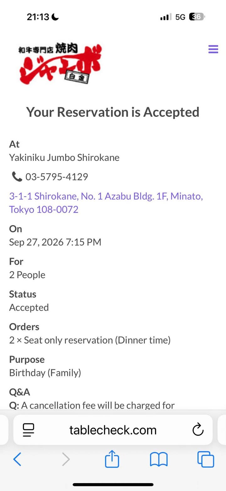
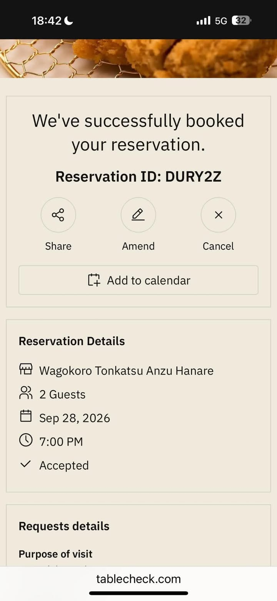
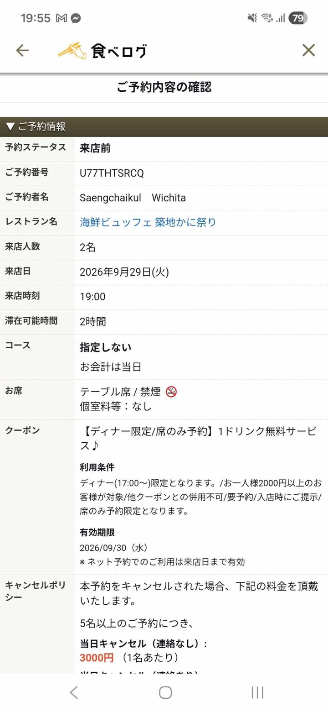
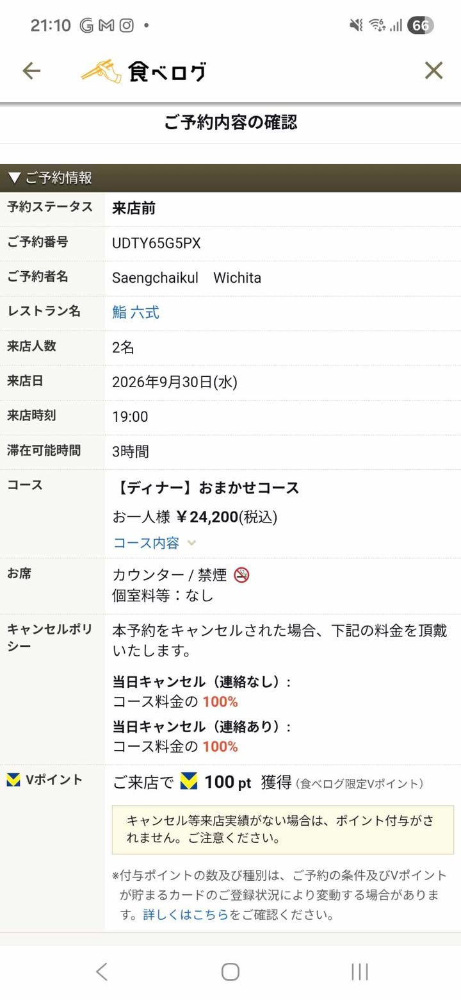

Yakiniku Jumbo Shirokane
焼肉 ジャンボ 白金
เวลา19:15 น.
จำนวน2 คน
สถานะAccepted
การจองมื้อเย็น · Seat only reservation · Purpose: Birthday (Family)
DAY 02

焼肉 ジャンボ 白金
DAY 03

和ごころ とんかつ あんず はなれ
DAY 04

海鮮ビュッフェ 築地かに祭り
DAY 05

鮨 六式